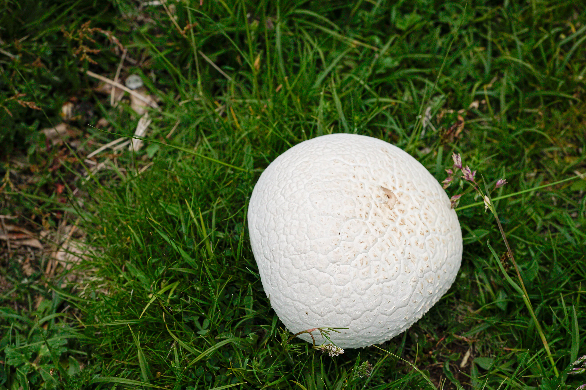
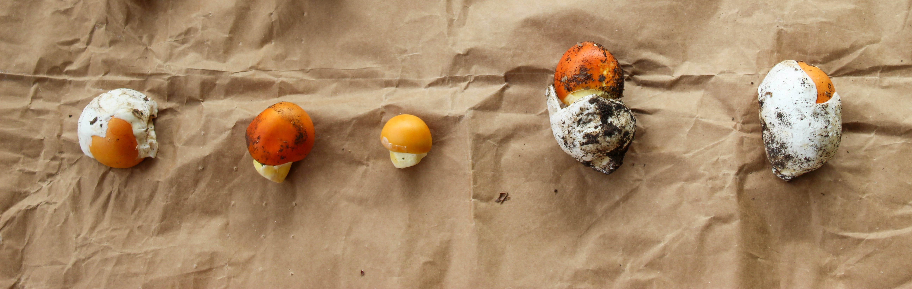

Giant Puffball Mushrooms
Calvatia gigantea.
The giant puffball is a large, edible mushroom found in meadows, fields, and deciduous forests in temperate regions worldwide, appearing in late summer and autumn. These mushrooms can grow enormous—sometimes over 50 cm wide and weighing several kilograms—and are prized for their mild flavor and spongy texture. Unlike most mushrooms, all spores develop inside the fruiting body, which starts out solid and white, turning yellowish or greenish-brown as it matures. Immature puffballs are safe to eat, but older specimens become inedible as the spores develop and the mushroom begins to decompose.
Giant puffballs are distinguished by their round, uniform shape and solid white interior when young, with no gills, stems, or internal cavities. Cutting the mushroom open is essential for identification: edible puffballs remain pure white inside, while poisonous lookalikes like earthballs have a darker, firm, and often purplish interior. They produce a white spore print when immature and can contain trillions of tiny yellowish spores as they mature. Their sheer size and consistent texture make them relatively easy to identify in the wild.

Amanita "Egg" Mushrooms
Young Amanita muscaria.
Amanita mushrooms are a genus that includes some of the most deadly fungi in the world, such as the Death Cap (Amanita phalloides) and the Destroying Angel (Amanita virosa). Young Amanitas start out as white, egg-shaped “buttons” enclosed in a sac-like membrane called a universal veil, making them easy to mistake for edible puffballs or button mushrooms. As they mature, the veil breaks and the cap and stem expand, revealing characteristic features such as white gills, a ring on the stem, and a volva at the base. All Amanitas produce a white spore print, and their toxic compounds make even small mistakes in identification extremely dangerous.
Key identifying features include the white gills, white spore print, stem ring, and volva at the base, which may be partially buried underground. The egg stage is particularly risky because it hides these features, resembling edible mushrooms. As the mushroom grows, ragged patches from the veil may remain on the cap, providing clues to its identity. Because Amanitas are highly poisonous, no wild mushrooms in the egg stage or with white gills should be eaten without expert verification.